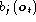
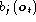
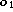
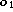
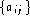

Let each spoken word be represented by a sequence of speech vectors or
observations  , defined as
, defined as
where  is the speech vector observed at time t. The
isolated word recognition problem can then be regarded as that of
computing
is the speech vector observed at time t. The
isolated word recognition problem can then be regarded as that of
computing
where is the i'th vocabulary word. This probability is not computable directly but using Bayes' Rule gives
Thus, for a given set of prior probabilities , the most
probable spoken word depends only on the likelihood .
Given the dimensionality of the observation sequence  , the
direct estimation of the joint conditional probability
, the
direct estimation of the joint conditional probability
 from examples of spoken words
is not practicable. However, if a parametric model of word production
such as a Markov model
is assumed, then estimation from data is possible since the problem
of estimating the class conditional observation densities
is replaced by the much simpler problem of estimating the Markov
model parameters.
from examples of spoken words
is not practicable. However, if a parametric model of word production
such as a Markov model
is assumed, then estimation from data is possible since the problem
of estimating the class conditional observation densities
is replaced by the much simpler problem of estimating the Markov
model parameters.
In HMM based speech recognition, it is assumed that the sequence of
observed speech vectors corresponding to each word is generated
by a Markov model as shown in Fig. 1.3.
A Markov model is a finite state machine which changes state
once every time unit and each time t that a state j is entered, a
speech vector  is generated from the probability density
 . Furthermore, the transition from state i to state j
is also probabilistic and is governed by the discrete probability
is generated from the probability density
 . Furthermore, the transition from state i to state j
is also probabilistic and is governed by the discrete probability  .
Fig. 1.3 shows an example of this process where the six state
model moves through the state sequence X=1,2,2,3,4,4,5,6 in
order to generate the sequence  to . Notice that
in HTK, the entry and exit states of a HMM are non-emitting. This
is to facilitate the construction of composite models as explained in
more detail later.
.
Fig. 1.3 shows an example of this process where the six state
model moves through the state sequence X=1,2,2,3,4,4,5,6 in
order to generate the sequence  to . Notice that
in HTK, the entry and exit states of a HMM are non-emitting. This
is to facilitate the construction of composite models as explained in
more detail later.
The joint probability that  is generated by the model M moving
through the state sequence
X is calculated simply as the product of the transition
probabilities and the output probabilities. So for the state sequence X in
Fig. 1.3
is generated by the model M moving
through the state sequence
X is calculated simply as the product of the transition
probabilities and the output probabilities. So for the state sequence X in
Fig. 1.3
However, in practice, only the observation sequence
 is known and the
underlying state sequence X is hidden. This is why it is
called a Hidden Markov Model.
is known and the
underlying state sequence X is hidden. This is why it is
called a Hidden Markov Model.
Given that X is unknown, the required likelihood is computed by summing over all possible state sequences , that is
where x(0) is constrained to be the model entry state and x(T+1) is constrained to be the model exit state.
As an alternative to equation 1.5, the likelihood can be approximated by only considering the most likely state sequence, that is
Although the direct computation of equations 1.5 and 1.6 is not tractable, simple recursive procedures exist which allow both quantities to be calculated very efficiently. Before going any further, however, notice that if equation 1.2 is computable then the recognition problem is solved. Given a set of models corresponding to words , equation 1.2 is solved by using 1.3 and assuming that
All this, of course, assumes that the parameters  and
 are known for each model . Herein lies the
elegance and power of the HMM framework. Given a set of training examples
corresponding to a particular model, the parameters of that model can be
determined automatically by a robust and efficient re-estimation
procedure. Thus, provided that a sufficient number of representative
examples of each word can be collected then a HMM can be constructed
which implicitly models all of the many sources of variability inherent
in real speech. Fig. 1.4 summarises the use of HMMs
for isolated word recognition. Firstly, a
HMM is trained for each vocabulary word using a number of examples
of that word. In this case, the vocabulary consists of
just three words: ``one'', ``two'' and ``three''.
Secondly, to recognise some unknown word, the likelihood of
each model generating that word is calculated and the most likely
model identifies the word.
are known for each model . Herein lies the
elegance and power of the HMM framework. Given a set of training examples
corresponding to a particular model, the parameters of that model can be
determined automatically by a robust and efficient re-estimation
procedure. Thus, provided that a sufficient number of representative
examples of each word can be collected then a HMM can be constructed
which implicitly models all of the many sources of variability inherent
in real speech. Fig. 1.4 summarises the use of HMMs
for isolated word recognition. Firstly, a
HMM is trained for each vocabulary word using a number of examples
of that word. In this case, the vocabulary consists of
just three words: ``one'', ``two'' and ``three''.
Secondly, to recognise some unknown word, the likelihood of
each model generating that word is calculated and the most likely
model identifies the word.